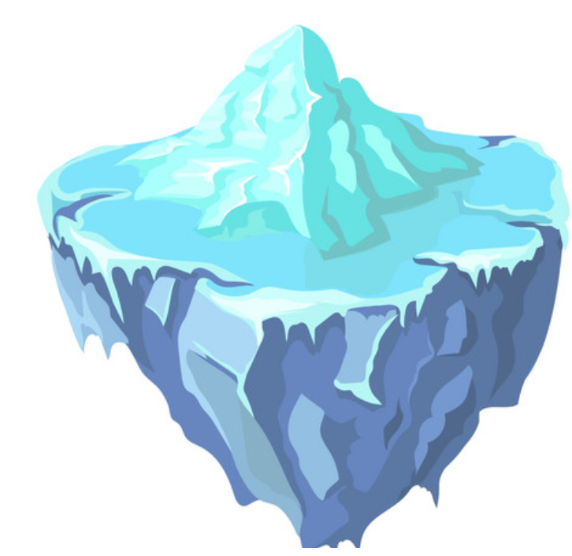
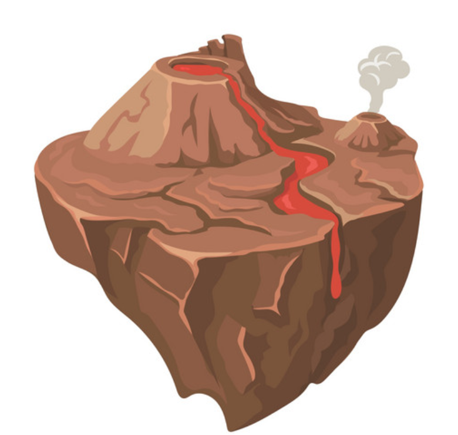
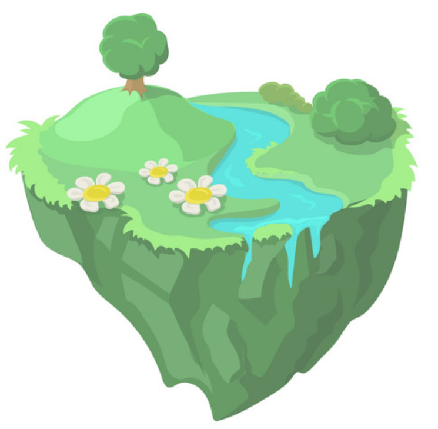

<!DOCTYPE html>
<html>
    <head>
        <title>Study on Line Tracing Task | LPNC</title>

        <!-- jsPsych core library and plugins -->
      <script src="jspsych-6.3.0/jspsych.js"></script>
      <script src="jspsych-6.3.0/plugins/jspsych-html-keyboard-response.js"></script>
      <script src="jspsych-6.3.0/plugins/jspsych-image-keyboard-response.js"></script>
      <script src="jspsych-6.3.0/plugins/jspsych-preload.js"></script>
      <script src="jspsych-6.3.0/plugins/jspsych-call_function.js"></script>
      <script src="jspsych-6.3.0/plugins/jspsych-html-button-response.js"></script>
      <script src="jspsych-6.3.0/plugins/jspsych-survey-likert.js"></script>
      <script src="jspsych-6.3.0/plugins/jspsych-fullscreen.js"></script>
      <script src="jspsych-6.3.0/plugins/jspsych-survey-multi-choice.js"></script>
      <script src="jspsych-6.3.0/plugins/jspsych-survey-text.js"></script>
      <script src="jspsych-line-tracing.js"></script>
      <link href="jspsych-6.3.0/css/jspsych.css" rel="stylesheet" type="text/css">

      <!-- Line tracing task -->
      <script src="task/base64.js" type="text/javascript"></script>
      <script src="task/canvas2image.js" type="text/javascript"></script>
      <script src="task/jquery.js" type="text/javascript"></script>
      <script src="task/color_trace.js" type="text/javascript"></script>
      <link rel="stylesheet" href="css/custom.css"></link>

  </head>
  <body></body>

  <script>


/* welcome message */
      var welcome = {
        type: "html-button-response",
        choices: ["&#10095;"],
        stimulus: `
        <p class = "custom-font">Bonjour ! Bienvenue dans ce jeu. <br>
        
        <br>
        Je m'appelle Milo et c'est moi qui vais te guider dans cette nouvelle aventure !</p>
        <br>
        <p class = "continue-instructions">Appuies sur la flèche pour me suivre.</p>
        `,
      };


/* switching to fullscreen */
      var fullscreen = {
        type: 'fullscreen',
        message: `<p class = "custom-font">Pour commencer ce jeu, cliques sur le bouton "Commencer"</p>`,
        button_label: 'Commencer',
        fullscreen_mode: true
      };

/* instructions trial */

      //general1
      var instructions_1 = {
          type: "html-button-response",
          choices: ["&#10095;"],
          stimulus: `
          <p class = "custom-font">Un dessin va apparaître sur l'écran.</p>
          <p class = "custom-font">Tu devras le redessiner le plus précisément possible en bougeant ta souris.</p>
          
          <p class = "continue-instructions">Appuies sur la flèche pour continuer.</p>
          `,
            };

      //general2
      var instructions_2 = {
          type: "html-button-response",
          choices: ["&#10095;"],
          stimulus: `
          <p class = "custom-font">Pour commencer le jeu, tu vas devoir cliquer sur le rond vert: c'est le point de départ.</p>
          <p class = "custom-font">Un rond rouge va alors apparaître : c'est le point d'arrivée. </p>
          <p class = "custom-font">Le but est d'arriver sur le rond rouge en restant le plus possible sur les lignes du dessin.</p>
          <p class = "continue-instructions">Appuies sur la flèche pour commencer le jeu.</p>
          `,
            };

      //general3
      var instructions_3 = {
          type: "html-button-response",
          choices: ["&#10095;"],
          stimulus: `
          <p class = "custom-font">Plus tu resteras sur les lignes du dessin, plus tu gagneras des points.</p>
          <p class = "custom-font">Le but est de gagner le plus de points possible.</p>
          
          <p class = "continue-instructions">Appuies sur la flèche pour commencer le jeu.</p>
          `,
            };

      //level1
      var level1 = {
          type: "html-button-response",
          choices: ["&#10095;"],
          stimulus: `
          <p class = "custom-font">Dans ce jeu, il y a aura trois niveaux.</p>
          <p class = "custom-font">Commençons par le premier niveau ! </p>
          
          <p class = "continue-instructions">Appuies sur la flèche pour commencer le jeu.</p>
          `,
            };

      //level2
      var level2 = {
          type: "html-button-response",
          choices: ["&#10095;"],
          stimulus: `
          <p class = "custom-font">Bravo ! Tu as fini le premier niveau.</p>
          <p class = "custom-font">Continuons avec le deuxième niveau ! </p>
          
          <p class = "continue-instructions">Appuies sur la flèche pour commencer le jeu.</p>
          `,
            };

      //level3
      var level3 = {
          type: "html-button-response",
          choices: ["&#10095;"],
          stimulus: `
          <p class = "custom-font">Bravo ! Tu as fini le deuxième niveau.</p>
          <p class = "custom-font">Continuons avec le dernier niveau ! </p>
          
          <p class = "continue-instructions">Appuies sur la flèche pour commencer le jeu.</p>
          `,
            };


      //training phase 1 : with both visual and score feedback
      var instructions_all_feedback = {
          type: "html-button-response",
          choices: ["&#10095;"],
          stimulus: `
          <p class = "custom-font"> </p>
          <p class = "continue-instructions">Appuies sur la flèche pour commencer le jeu.</p>
          `,
            };


      //training phase 2 : only score feedback
      var instructions_score_feedback = {
          type: "html-button-response",
          choices: ["&#10095;"],
          stimulus: `
          <p class = "custom-font"> </p>
          <p class = "continue-instructions">Appuies sur la flèche pour commencer le jeu.</p>
          `,
            };

      //test phase without feedback
      var instructions_test = {
          type: "html-button-response",
          choices: ["&#10095;"],
          stimulus: `
          <p class = "custom-font"> </p>
          <p class = "continue-instructions">Appuies sur la flèche pour commencer le jeu.</p>
          `,
            };


/* Line tracing task */

// defining the timeline variables

var training_all_feedback_stimuli = [
  // {figure_number: 0, },
  {figure_number: 1, },
  // {figure_number: 2, },
  // {figure_number: 3, },
];

var training_score_feedback_stimuli = [
  // {figure_number: 1, },
  // {figure_number: 1, },
  {figure_number: 2, },
  // {figure_number: 3, },
];

var test_stimuli = [
  // {figure_number: 1, },
  // {figure_number: 1, },
  // {figure_number: 2, },
  {figure_number: 3, },
];

// 1: training phase with visual and score feedback
var training_all_feedback = {
  type: "jspsych-line-tracing",
  figure_number: jsPsych.timelineVariable('figure_number'),
  trace_color: "color",
  score_feedback: true,
  start_instructions: "Cliques sur le rond vert pour commencer !",
  draw_instructions: "Rejoins le rond rouge en restant sur les lignes du dessin",
  end_instructions: "Tu as fini ce dessin. Cliques sur la flèche pour continuer.",
  stimulus: `<p></p>`,
  prompt: '<p>Press "y" key to begin.</p>',
  choices: ['y'],
  data: {},
  on_finish: function(data){
  data_score = data.score * 100;
  data_score_falsed = data_score * 0.9;
  data_score_2d = data_score.toFixed(2);
  data_score_falsed_2d = data_score_falsed.toFixed(2);
}
};

// 2: training phase with score feedback only (no visual feedback)
var training_score_feedback = {
  type: "jspsych-line-tracing",
  figure_number: jsPsych.timelineVariable('figure_number'),
  trace_color: "transparent",
  score_feedback: true,
  start_instructions: "Cliques sur le rond vert pour commencer !",
  draw_instructions: "Rejoins le rond rouge en restant sur les lignes du dessin",
  end_instructions: "Tu as fini ce dessin. Cliques sur la flèche pour continuer.",
  stimulus: `<p></p>`,
  prompt: '<p>Press "y" key to begin.</p>',
  choices: ['y'],
  data: {},
  on_finish: function(data){
  data_score = data.score * 100;
  data_score_falsed = data_score * 0.9;
  data_score_2d = data_score.toFixed(2);
  data_score_falsed_2d = data_score_falsed.toFixed(2);
}
};

// 3: test phase : without feedback
var test_phase = {
  type: "jspsych-line-tracing",
  figure_number: jsPsych.timelineVariable('figure_number'),
  trace_color: "transparent",
  score_feedback: false,
  start_instructions: "Cliques sur le rond vert pour commencer !",
  draw_instructions: "Rejoins le rond rouge en restant sur les lignes du dessin",
  end_instructions: "Tu as fini ce dessin. Cliques sur la flèche pour continuer.",
  stimulus: `<p></p>`,
  prompt: '<p>Press "y" key to begin.</p>',
  choices: ['y'],
  data: {},
  on_finish: function(data){
  data_score = data.score * 100;
  data_score_falsed = data_score * 0.9;
  data_score_2d = data_score.toFixed(2);
  data_score_falsed_2d = data_score_falsed.toFixed(2);
}
};

/* Two alternative force choice */
    var twoafc = {
      type: 'html-button-response',
      stimulus: '<p>Parmi les deux scores suivants, à ton avis, lequel est le tien?</p>',
      choices: [,],
      prompt: "<p></p>",
      on_start: function(twoafc){
        twoafc.choices[0] = data_score_2d + "%";
        twoafc.choices[1] = data_score_falsed_2d + "%";
      }
    };


/* Confidence scale */
    var scale = [
      "50 - J'ai répondu au hasard ",
      "60",
      "70",
      "80",
      "90",
      "100 - Je suis sûr(e) de ma réponse"
    ];

    var confidence = {
      type: 'survey-likert',
      questions: [
      {prompt: "A quel point es-tu sûr de ta réponse?", labels: scale}
      ]
    };


/* Looping the procedure using timeline variables */

// 1: training phase with visual and score feedback
var training_all_feedback_procedure = {
  timeline: [
    training_all_feedback,
    twoafc,
    confidence,
  ],
  timeline_variables: training_all_feedback_stimuli,
  randomize_order: true,
  sample: {
          // without replacement: once a figure is picked, it cannot be picked again
          type: 'without-replacement',
          // number of trials of the procedure
          size: 3,
  }
};

// 2: training phase with score feedback only (no visual feedback)
var training_score_feedback_procedure = {
  timeline: [
    training_score_feedback,
    twoafc,
    confidence,
  ],
  timeline_variables: training_score_feedback_stimuli,
  randomize_order: true,
  sample: {
          // without replacement: once a figure is picked, it cannot be picked again
          type: 'without-replacement',
          // number of trials of the procedure
          size: 3,
  }
};

// 3: test phase : without feedback
var test_procedure = {
  timeline: [
    test_phase,
    twoafc,
    confidence,
  ],
  timeline_variables: test_stimuli,
  randomize_order: true,
  sample: {
          // without replacement: once a figure is picked, it cannot be picked again
          type: 'without-replacement',
          // number of trials of the procedure
          size: 3,
  }
};


/*End of the line tracing task*/

    var end_task = {
      type: "html-button-response",
      choices: ["&#10095;"],
      stimulus: `
        <p class = "custom-font">Bravo ! Tu as terminé le jeu et tu t'en es très bien sorti ! Merci d'avoir joué avec moi.</p>
        
        <p class = "custom-font">Avant de partir, j'ai quelques questions pour toi !</p>
        <p class = "continue-instructions">Appuies sur la flèche pour continuer.</p>
        `,
    };


/* Demographic questions*/

    var age = {
       type: 'survey-text',
       questions: [{prompt: "Quel âge as-tu ?"}],
     };

    var sex = {
     type: 'survey-multi-choice',
     questions: [{prompt: "Es-tu", options: ["Un garçon", "Une fille", "Autre"], required: true, horizontal: true}],
     };

     var difficulty = {
      type: 'survey-multi-choice',
      questions: [{prompt: "Comment as-tu trouvé ce jeu?", options: ["Très difficile", "Difficile", "Facile", "Très facile"], required: true, horizontal: true}],
      };

    var comments = {
        type: 'survey-text',
        questions: [{prompt: "Cette question s'adresse aux parents. Avez-vous des remarques concernant cet exercice (difficulté de la tâche, motivation de votre enfant...)"}],
      };


/*End of full screen*/

        var fullscreen_exit = {
            type: 'fullscreen',
            fullscreen_mode: false
          };

/*End of study*/

    var ending = {
        type: "html-keyboard-response",
        stimulus: `
        <p class = "custom-font">Tu as terminé ce jeu et tu t'en es très bien sorti.</p>
        <p class = "custom-font">Bravo et merci d'avoir joué avec moi !</p>
        <p class = "custom-font">A bientôt peut être.</p>
        
      `};


/* create timeline */
    var timeline = [];
    timeline.push(welcome,
                  //fullscreen,
                  level1,
                  instructions_1,
                  instructions_2,
                  instructions_3,
                  training_all_feedback_procedure,
                  level2,
                  training_score_feedback_procedure,
                  level3,
                  test_procedure,
                  // end_task,
                  // age,
                  // sex,
                  // difficulty,
                  // comments,
                  //fullscreen_exit,
                  ending);


  /* start the experiment */
      jsPsych.init({
        timeline: timeline,
        on_finish: function(){
          jsPsych.data.displayData();
        }
        });


   </script>
</html>
